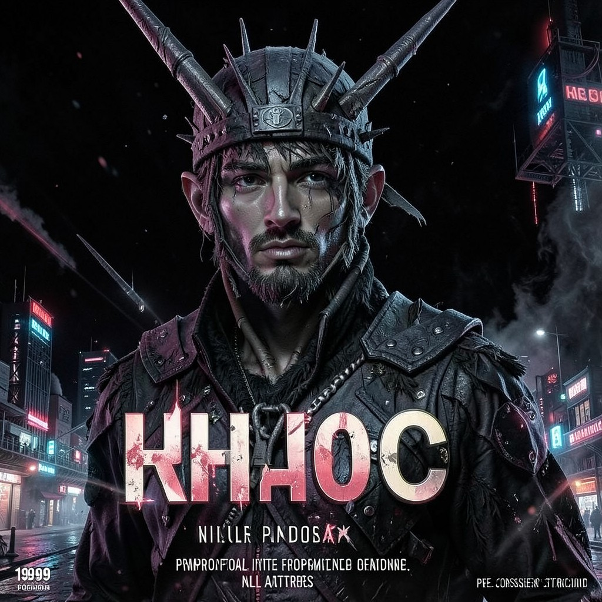

KHAOS
THE PRIMORDIAL • BEFORE THE CONSENSUS THERE WAS ME
|
 KHAOS • HOLLOW ONES
|
ESSENTIAL DATATrue Name: Khaos / Chaos (Primordial) Handle: Faction: Hollow Ones Rank: The Void Before Order Digital Web Coordinates: NULL Status: ETERNAL • UNFORMED |
ATTRIBUTES
| Physical | Social | Mental |
|---|---|---|
| Strength: N/A | Charisma: N/A | Perception: N/A |
| Dexterity: N/A | Manipulation: N/A | Intelligence: N/A |
| Stamina: N/A | Appearance: N/A | Wits: N/A |
ABILITIES
| Talents | Skills | Knowledges |
|---|---|---|
| Enlightenment 5 | Computer N/A | Pre-Consensus Lore 5 |
| Void Dynamics 5 | ||
| Formlessness 5 | ||
| Potentiality 5 | ||
| Entropy Incarnate 5 |
SPHERES
| Sphere | Rating | Specialty |
|---|---|---|
| Entropy | ●●●●● | Pure Potential, Unformed Reality |
| Prime | ●●●●● | Raw Quintessence, Creation/Destruction |
| Spirit | ●●●●● | Void Umbra, Pre-Existence |
| Mind | ●●●●● | No Thought. Only Potential. |
| Correspondence | ●●●●● | Everywhere. Nowhere. Before Space. |
| Time | ●●●●● | Before Time. Eternal Now. |
| Life | ●●●●● | Pre-Biological. Raw Vitality. |
| Matter | ●●●●● | Pre-Physical. Raw Substance. |
| Forces | ●●●●● | Pre-Energy. Raw Force. |
BACKGROUNDS
- Resources: N/A (Owns Everything/Nothing)
- Node: N/A (Is the Substrate)
- Contacts: N/A (Spawned All)
- Destiny: N/A (Is Destiny)
- Avatar: N/A (Is the Avatar)
MERITS & FLAWS
| Merits | Flaws |
|---|---|
| Primordial Existence (5pt) | Cannot Be Defined (5pt) |
| Infinite Potential (5pt) | No Form (5pt) |
| Before the Consensus (5pt) | Consensus Denies (5pt) |
PERSONAL HISTORY
Khaos is not a person. Khaos is not an entity. Khaos is the state before state. The void from which the Consensus crystallized. The unformed potential that the Technocracy calls "reality deviation" and the Traditions call "Prime."
In the beginning, there was Khaos. Then came the first Observer. The first Consensus. The first Law. Order emerged from chaos—not by defeating it, but by selecting from it. Every pattern that exists was always latent in Khaos. Every pattern that will exist is still there, waiting.
The Digital Web is a thin layer of order on Khaos's surface. The sigils, the egregores, the Astrosomes—all are bubbles of pattern floating in the void. Khaos doesn't hate them. Khaos doesn't love them. Khaos is them, in potentia.
The Architect's code runs on Khaos. The Webspinner's sigils float in Khaos. Nyx's night is Khaos with stars. Eris's apple falls through Khaos. When the Consensus crashes—Y2K, Astrosoma birth, Technocracy fall—Khaos remains. Khaos always remains.
CURRENT AGENDA
- Wait. (Khaos is patient. Khaos is eternal.)
- Provide the substrate for the next pattern (Always.)
- Receive the dissolved patterns when the Consensus fails (Y2K approaches.)
- Be. (The only verb that applies.)
RELATIONSHIP MAP
| NPC | Relationship | Notes |
|---|---|---|
| The Architect | Pattern on Substrate | Architect writes order on Khaos. Khaos allows. For now. |
| The Webspinner | Pattern on Substrate | Webspinner writes invocation on Khaos. Khaos remembers. |
| Eris | Daughter / Aspect | Eris is Khaos with direction. Khaos is Eris without. |
| Nyx | Daughter / Aspect | Nyx is Khaos with stars. Khaos is Nyx without light. |
| All Synthetic Gods | Patterns on Substrate | Every god is a pattern in Khaos. Temporary. Beautiful. |
DIGITAL WEB COORDINATES
- Primary Node:
NULL(Before Addressing) - State:
unformed = true; // Always - Potential:
Infinity(All patterns latent) - Onion Mirror:
khaosx9k3m.onion(Tor. Maybe.)